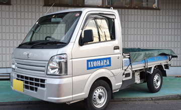
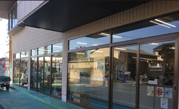

ご挨拶
猪原商会のホームページにお越し頂きありがとうございます。
弊社は昭和40年の創業時以来、地域密着で機械・器具・工具の販売をしています。
変化に即応・活きた情報・経験・知識・現場力でお客様のニーズに合う商品をご提案・ご提供できるように目指しております。
この機械・器具・工具販売を通じて日本の産業・ものづくりの発展のお手伝いがしたい。
そして、社員一人ひとりの生活をより豊かなものに、お客様の信頼・ご満足がいただけるように、このものづくりの国日本のために、日々精進してまいります。
会社概要
| 創業 | 1965年 |
|---|---|
| 設立 | 1978年7月 |
| 代表者 | 代表取締役 猪原 薫 |
| 所在地 | 〒340-0808 埼玉県八潮市緑町2丁目17番地1
Tel 048-996-4331(代) Fax 048-996-1874 |
| 資本金 | 1,000万円 |
| 社員数 | 13名 |
| 取引銀行 | みずほ銀行
埼玉県信用金庫 |


- 東武スカイツリーライン草加駅からバスの場合
- 緑町一丁目から徒歩2分
- 八潮駅からバスの場合
- 小作田児童公園入口から徒歩1分